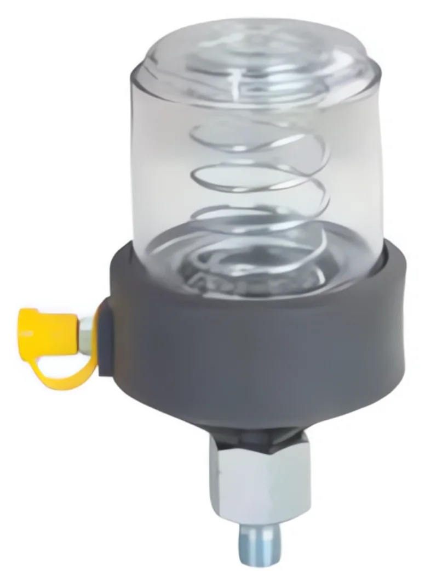

GROZ · Greasing Equipment
Grease Feeders
CAT NR GFD/PP/2/N · ORD NR 47721
| CAT NR (catalogue number) | GFD/PP/2/N |
|---|---|
| ORD NR (order number) | 47721 |
| Box quantity | 36 |
| Variant (printed column) | 1/8" NPT THREADS |
| Bowl capacity (gms) | 56 |
| Bowl capacity (oz.) | 2 |
| Operating condition | Static |
| Overall dia. (inch) | 2-3/8 |
| Overall dia. (mm) | 60 |
| Overall height (inch) | 4-5/8 |
| Overall height (mm) | 117 |
| Table section | POLYCARBONATE BOWL & NYLON BASE |
Open in the catalogue The catalogue PDF, page 74
From the GROZ Fluid Handling CC-07 catalogue. Not yet verified: these details were read from the printed catalogue automatically; check the catalogue page before ordering.